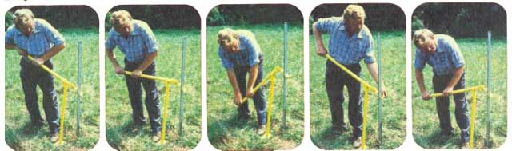
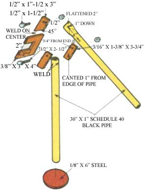
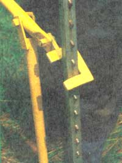

As anyone who's done it before can tell you, yanking steel fenceposts out of the ground is backbreaking work. But this job doesn't have to be all that unpleasant . . . and it won't be, if you build yourself one of these astonishingly easy-to-make fencepost pullers.
The handy tool isn't difficult to use, either: You merely set the stand upright next to the offending pole (with the handle up), slip the puller's "jaw" around the post so it catches on a wire stud, and push down on the handle . . . that pesky post'll come out quicker'n 1-2-3!
Best of all, you don't have to have three degrees in engineering to figure this project out. And you won't need a hardware store full of material, either. Just gather together 5 feet of 1” Schedule 40 black pipe, a 1/8" X 6” steel plate (round or square), two 1/2" bolts (1- 1/2" and 2-1/2" long respectively), a 3/8" X 3" X 4” piece of steel stock, a 1/2" X 1-1/2" X 3" piece of flat stock, and a scrap of 3/16" X 2-3/4" X 3-3/4" plate steel. A welding torch (or access to one) would also a great help.
To start off, cut your 5-foot length of pipe right in half, producing two; 30-inch sections. And, while you're in the cutting mood, divide the piece of 3/16" X 2-3/4" X 3-3/4" steel into two sections . . . 3/16" X 1-3/8" X 3-3/4” each. With that done cut a 2" X 2” square hunk out of the side of the 3/8" X 3" X 4" plate . . and you might as well slice the corner of the 1/2' X 1-1/2" X 3" piece of stock (cut this at a 45° angle) while you're at it, too.
For the next step, drill a slightly oversized 1/2" hole half an inch from the square edge of the stock that you just cut the corner off of, and then drill two more "full" 1/2" holes . . . three-quarters of an inch from the end of each 3/16" X 1-3/8" X 3-3/4" piece of steel. Now, weld these two chunks of metal-holes upward-to the end of one of the pieces of pipe. Fasten one on either side and be sure that they're both canted out one inch from the pipe (or at a 15° angle to it). You can also take a few minutes to weld the 1/2" X 1-1/2" X 3” piece of stock to the center of the now C shaped "jaw” so that the 45° angle is flat against the jaw's upper mandible. While you’re at it, the 1/8" X 6 plate should, of course, be fastened to the other end of the pipe.
Next, measure off a two-inch space at the end of the remaining length of pipe, and mash this tip flat. Bore an oversized 1/2" hole one inch from the flattened end, and another one four inches down the pole from the first hole. Now, fasten the jaw assembly to the flat end of the handle with the 1-1/2" bolt, run the 2-1/2” boll through the canted supports- with the handle in between-and secure both bolts with 1/2" nuts.
Finally, plaster a coat of rustproof paint on the whole thing . . . and you've got yourself a heavy duty fencepost puller that'll stand up next to (and maybe even outperform) the best store-bought ones around. And this gadget ever versatile! Not only can it draw your "everyday" steel fenceposts out of the ground, but it works like a champ on tall stakes and round posts too! Why, the tool can even pull a well if need be!
And if you're a good scrounger you'll be able to build your puller for the cost of the welding (which isn’t much if you can do your own) and a little bit of paint. But, even if you have to buy your materials, the cost still won't exceed $8.00 . . . which is pretty darn good, considering that it'll pay for itself the minute you salvage just four buried posts worth the going price of two bucks each!
|
|
 |
 |
|
 |
|
|